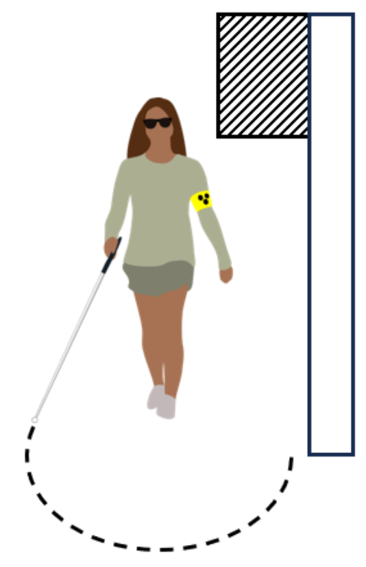
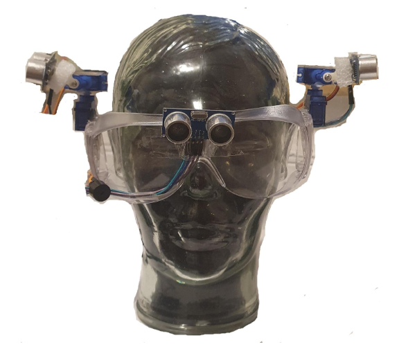
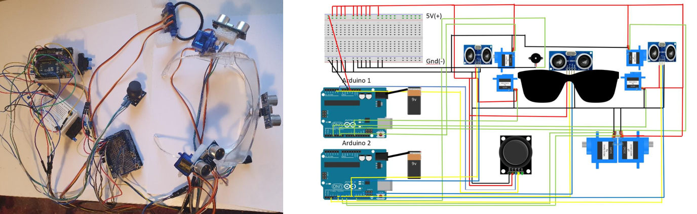

SensoVision - Die Brille der nächsten Generation
Eine intelligente Arduino-Brille zur Unterstützung blinder Menschen. Mithilfe von Ultraschallsensoren erkennt sie Hindernisse und vermittelt Informationen über Entfernung und Richtung durch akustische und mechanische Signale.
Projektübersicht
Ziel des Projekts war die Entwicklung einer tragbaren Konstruktion, die blinden Menschen hilft, Hindernisse sicherer wahrzunehmen. Eine Brille mit mehreren Sensoren erkennt Objekte in der Umgebung und gibt dem Träger Rückmeldungen über die Position und Entfernung.

Die Projektidee
Die Idee entstand durch die Beobachtung einer Situation im Alltag, bei der ein Blindenstock ein seitliches Hindernis nicht erkennen konnte. Daraus entstand die Frage, ob eine technische Lösung entwickelt werden kann, die ähnlich wie Parksensoren bei Fahrzeugen vor Hindernissen warnt.

Sensorik zur Hinderniserkennung
Die Brille verwendet Ultraschallsensoren HC-SR04, um Entfernungen zu Hindernissen zu messen. Die Sensoren senden Schallwellen aus und berechnen anhand der Laufzeit des Echos die Entfernung eines Objektes.
Durch die Sensoren vorne sowie an den Seiten kann die Umgebung aus verschiedenen Richtungen überwacht werden.

Konstruktion der Brille
Die Konstruktion besteht aus einer Brille, drei Ultraschallsensoren, sechs Servomotoren, zwei Arduino-Steuereinheiten, einem Joystick und einem Buzzer.
Die seitlichen Sensoren sind beweglich montiert und können mithilfe von Motoren horizontal und vertikal ausgerichtet werden.

Gesamtsystem und Schaltung
Das Gesamtsystem verbindet Sensoren, Motoren und Steuerungseinheiten. Zwei Arduino-Systeme übernehmen die Verarbeitung der Sensordaten und die Steuerung der mechanischen Rückmeldungen.
Programmierung
Die Arduino-Programme messen kontinuierlich die Entfernung zu Hindernissen und verarbeiten die Sensordaten.
Der vordere Sensor steuert einen Buzzer, der je nach Entfernung schneller oder langsamer piept. Die seitlichen Sensoren steuern Motoren, die den Benutzer durch Berührung informieren.
Steuerung der Sensoren
Mit einem Joystick können die seitlichen Sensoren bewegt werden. Dadurch kann der Benutzer selbst bestimmen, in welche Richtung die Sensoren schauen sollen.
Tests und Ergebnisse
Die Brille konnte größere Hindernisse wie Wände zuverlässig erkennen. Kleinere Gegenstände waren aufgrund des begrenzten Erfassungsbereichs schwieriger zu erkennen.
Die Tests zeigten jedoch, dass das Konzept einer sensorbasierten Assistenzbrille technisch umgesetzt werden kann.
Ausblick und Verbesserungen
Zukünftige Verbesserungen könnten zusätzliche Sensoren, eine Kamera zur Objekterkennung oder eine drahtlose Übertragung der Sensordaten beinhalten.
Außerdem könnte ein automatisches System entwickelt werden, das die Sensoren ohne Joystick bewegt und die Informationen direkt über Sprache ausgibt.
Ergebnis
SensoVision zeigt, wie Sensorik, Arduino-Technik und Mechanik kombiniert werden können, um Menschen mit Sehbehinderung im Alltag zu unterstützen. Die entwickelte Brille kann Hindernisse erkennen und wichtige Informationen über die Umgebung vermitteln.